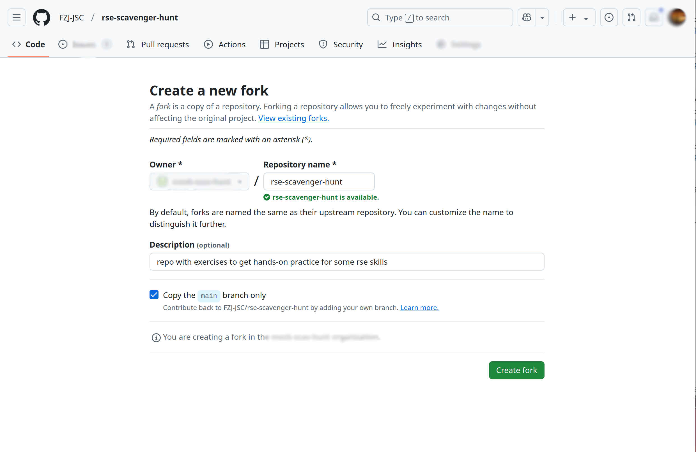
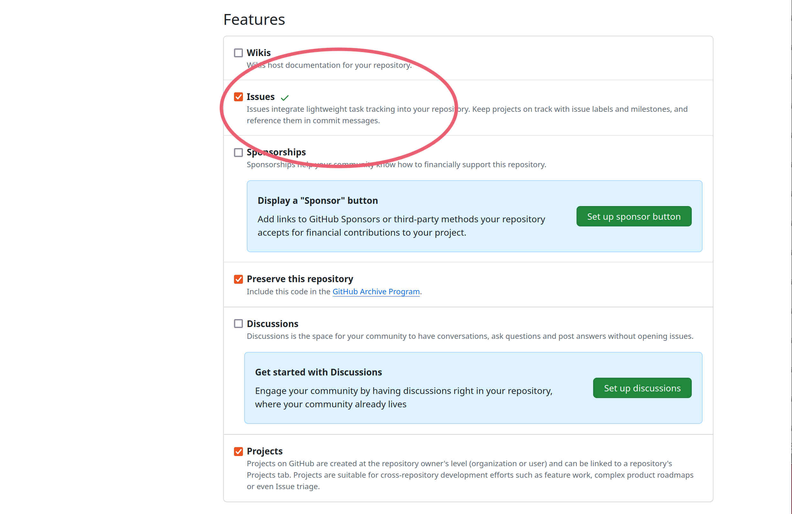
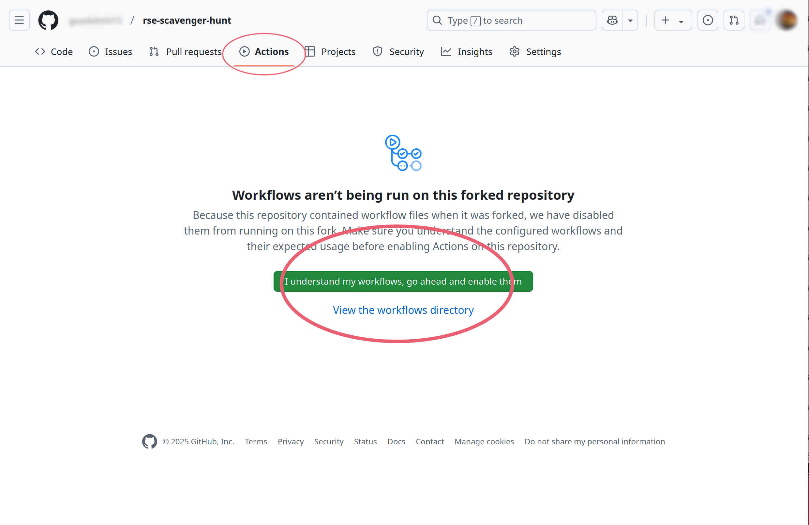
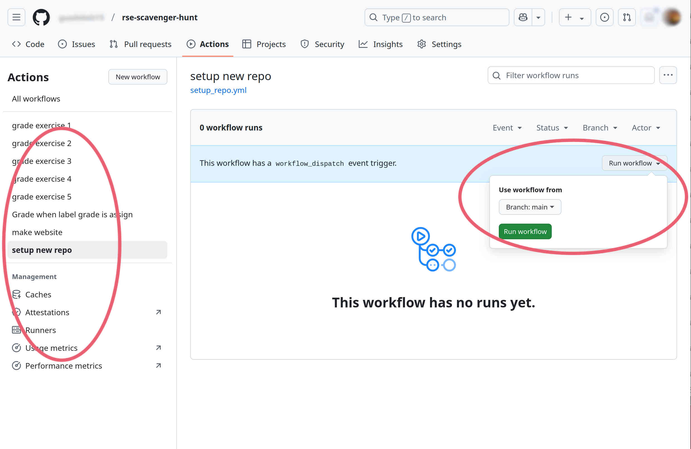
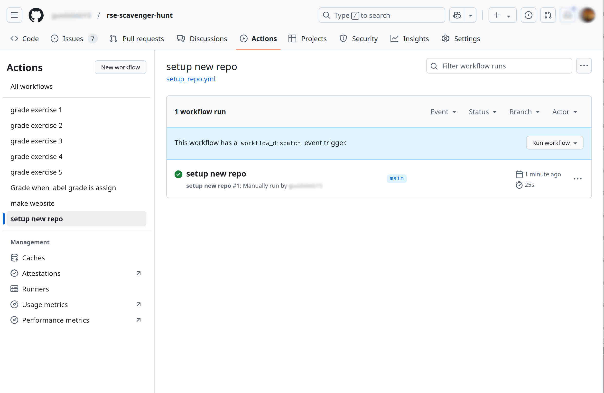

Instructions to get started
Follow the next steps to get your repository set up
-
Fork rse-scavenger-hunt by clicking Fork in the upper right section of the repository page
-
You will be asked a couple of options for your fork. Keep the default options. Make sure you keep the check on
copy the main branch only -
Once your fork is created, go to the Settings of your repository by clicking that option on the top right.
-
In the Settings page, you will need to enable Issues 
-
On the top part, now click Actions 
-
GitHub will ask your permission to enable the workflows from the repository you forked. Enable the workflows, by clicking the green button option.
-
Select on the left side, the
setup new repoworkflow. -
The middle part of the screen will show a blue banner with an option to
Run workflow. Pick the main branch and press in the green button to Run workflow.  -
If the setup went smoothly you should see something like the following 